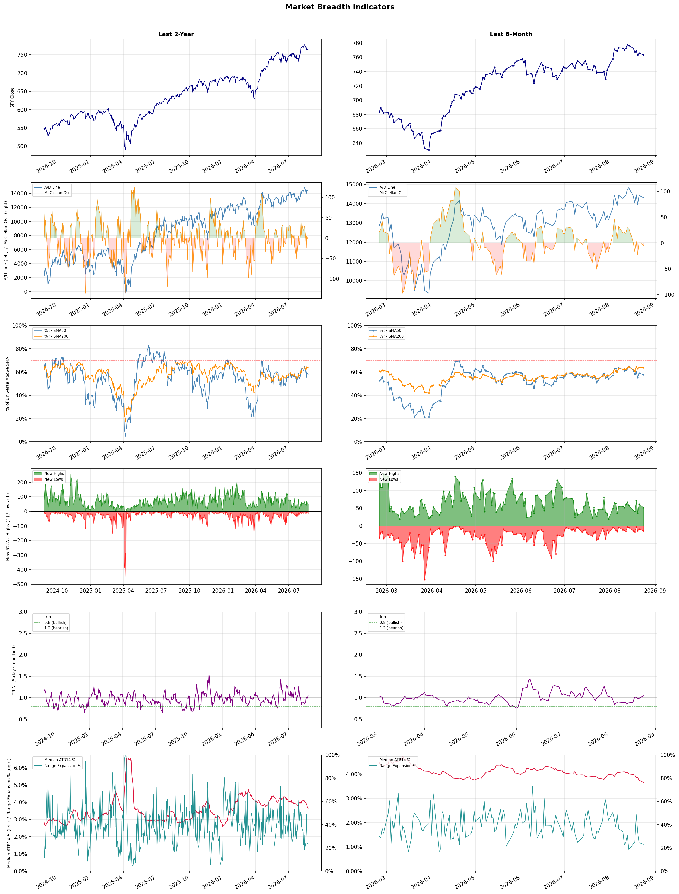

A daily market breadth and sector rotation report for active investors
| Item | Read |
|---|---|
| Regime | Selective Risk-On |
| Risk posture | Selective |
| Universe | 1,331 stocks tracked · 52 new 52-week highs · 30 active swing setups |
| Breadth | 57.7% of tracked stocks are above SMA50 — neutral range, new highs exceed new lows (52 vs 14), McClellan oscillator (breadth momentum) is negative at -4.6 |
| Leadership | Diagnostics & Research, Health Information Services, and Oil & Gas Refining & Marketing |
| Weakest groups | Solar, Utilities - Independent Power Producers, and Chemicals |
Use this report to prioritize research and chart review; validate entries, stops, liquidity, earnings, and risk before acting.
| Item | Read |
|---|---|
| Primary read | Selective Risk-On regime with Selective risk posture. |
| Research queue | TWST, WGS, NEO, PSNL, NTRA |
| Leadership focus | Diagnostics & Research, Health Information Services, and Oil & Gas Refining & Marketing |
| Caution list | Solar, Utilities - Independent Power Producers, and Chemicals |
| Review prompt | Check extension risk, chart location, fundamentals, valuation, and earnings before using any research row. |
| Item | Read |
|---|---|
| Primary read | 1 active risk warnings; use screen output as watchlist input only. |
| Bullish screens | ILMN, IQV, HTFL, FCX, TGB |
| Bearish screens | none |
| Alerts / levels | Automated trigger, stop, ATR, liquidity, reward/risk, and event-risk levels are pending future enrichment. |
| Review prompt | Open the linked chart, define trigger and invalidation, then check liquidity and event risk independently. |
Risk Posture: Selective — screen backdrop supports selective research in leading industries
Metric context: McClellan below -50 = elevated selling pressure; below -100 = washout territory. Range Expansion = share of stocks with daily range above their 20-day average. Signal Density = share of tracked names appearing in signal screens.
| Breadth Date | % > SMA50 | % > SMA200 | New Highs | New Lows | McClellan | Median Range | Avg Range | Median ATR14 | Range Expansion | Signal Density |
|---|---|---|---|---|---|---|---|---|---|---|
| 2026-08-24 | 57.7% | 63.7% | 52 | 14 | -4.6 | 2.8% | 3.3% | 3.7% | 23.1% | 5.7% |

Prior comparison date: August 21, 2026
| Metric | Prior | Current | Change |
|---|---|---|---|
| Regime | Selective Risk-On | Selective Risk-On | unchanged |
| Risk Posture | Selective | Selective | unchanged |
| % > SMA50 | 59.0% | 57.7% | -1.3 pts |
| % > SMA200 | 63.9% | 63.7% | -0.2 pts |
| New Highs | 62 | 52 | -10 |
| New Lows | 9 | 14 | -5 |
Top-10 industries entering: Oil & Gas Integrated. Top-10 industries leaving: Medical Devices. New multi-signal long setups: ABNB, AMGN, BBIO, BBVA, BHP, CRON, ELVN, FIVE, HALO, HTGC. New multi-signal short setups: none.
| Status | Tickers | Read |
|---|---|---|
| Added | ABNB, AMGN, BBIO, BBVA, BHP, CRON, ELVN, FIVE | New technical screen matches vs prior report. |
| Removed | A, ABSI, AEM, AJG, APPS, AR, ARX, AVTX | No longer present in today's technical screen matches. |
| Still Active | FCX, HTFL, ILMN, IQV, SSRM | Appeared in both current and prior reports. |
| Promoted | none | Model Screen Score improved by at least 15 points. |
| Downgraded | none | Model Screen Score declined by at least 15 points. |
| Direction | Industry | ETF | Prior Rank | Current Rank | Days | Rank Change |
|---|---|---|---|---|---|---|
| Rose | Gold | GDX | 86 | 6 | 35 | +80 |
| Rose | Copper | COPX | 84 | 4 | 35 | +80 |
| Rose | Oil & Gas E&P | XOP | 74 | 8 | 42 | +66 |
| Rose | Grocery Stores | N/A | 84 | 23 | 14 | +61 |
| Rose | Uranium | URA | 88 | 31 | 28 | +57 |
Bull: Gold is experiencing a rise in relative strength primarily due to a significant decline in Treasury yields, which enhances the appeal of non-yielding assets like gold. The recent headlines indicate that Morgan Stanley is bullish on gold following a breakout, and the GDX ETF saw its best day in nearly four years as yields dropped, suggesting a shift in investor sentiment favoring gold amid economic uncertainty and market volatility, as highlighted by falling Dow Jones futures and pressures on other sectors like retail. Additionally, the surge in gold prices to $4,400 indicates strong market demand, further supported by the positive performance of mining stocks, as seen with Torr Metals gaining 53%.
Bear: While the recent decline in Treasury yields may temporarily boost gold's appeal, this trend could reverse if economic conditions stabilize or inflation expectations rise, leading to higher yields and diminished interest in non-yielding assets. Furthermore, the significant rise in gold prices to $4,400 may not be sustainable, as it could trigger profit-taking among investors and increase production costs for miners, which could dampen their profitability and stock performance in the long run. Additionally, the bullish sentiment from firms like Morgan Stanley may reflect short-term trading strategies rather than a fundamental shift in the gold market, leaving the GDX vulnerable to sharp corrections.
Verdict: The rising trend in the gold industry is fundamentally driven by a significant decline in Treasury yields, which enhances the attractiveness of gold as a non-yielding asset amid economic uncertainty. However, investors should be cautious of the key risk that if economic conditions stabilize or inflation expectations rise, it could lead to higher yields, reducing gold's appeal and potentially triggering profit-taking, which may result in sharp corrections in gold prices and related mining stocks.
Sources: Yahoo Finance, Google News
Bull: Copper's rising relative strength can be attributed to its critical role in the electrification trend, as highlighted by the headlines discussing COPX as a key investment in the context of the "electrification squeeze." With increasing demand for copper driven by the shift towards renewable energy, electric vehicles, and infrastructure upgrades, the recent performance of copper miners, as noted in the headlines about significant gains in stocks like Southern Copper Corp, further underscores the bullish sentiment in the copper market. Additionally, the comparison of COPX with other ETFs, such as CPER, suggests that investors are recognizing copper miners as a more favorable investment amid a broader market correction, particularly in tech sectors like software.
Bear: While the electrification trend may drive short-term demand for copper, the current surge in copper prices and mining stocks could be unsustainable due to potential supply chain disruptions, regulatory challenges, and geopolitical tensions that could hinder production. Additionally, the recent headlines may reflect a speculative bubble rather than solid fundamentals, as the market often overreacts to trends without considering the cyclical nature of commodities, which could lead to a sharp correction in copper prices as investor sentiment shifts.
Verdict: Copper's rising trend is fundamentally driven by its essential role in the electrification of economies, particularly with the increasing demand from renewable energy initiatives and electric vehicle production. However, investors should remain cautious of potential supply chain disruptions and geopolitical tensions that could undermine this bullish momentum, suggesting a need for careful monitoring of market conditions and a diversified investment approach to mitigate risks.
Sources: Yahoo Finance, Google News
Bull: The Oil & Gas E&P sector is experiencing rising relative strength primarily due to a significant increase in oil prices, which recently topped $100 for the first time since May, as indicated in the headlines. This surge in oil prices is driving investor interest and capital inflows into the sector, as evidenced by the strong performance of oil ETFs, which are up 42% this year, and the rising stock prices of companies like Tidewater and Magnolia Oil & Gas. Additionally, the tight oil market is benefiting key players, further solidifying the bullish outlook for the industry.
Bear: While rising oil prices may currently boost investor sentiment and stock performance in the Oil & Gas E&P sector, this trend could be unsustainable due to potential economic headwinds such as recession fears, rising interest rates, and increasing regulatory pressures aimed at reducing carbon emissions. Additionally, the recent surge in oil prices may lead to demand destruction, as consumers and businesses adjust to higher costs, ultimately undermining the long-term viability of the sector and potentially reversing the gains made by oil stocks and ETFs.
Verdict: The Oil & Gas E&P sector's rising relative strength is primarily driven by a significant increase in oil prices, which have surpassed $100, attracting investor interest and capital inflows. However, key risks include potential economic headwinds such as recession fears and rising interest rates, which could dampen demand and undermine the sector's long-term viability. Investors should closely monitor these macroeconomic indicators to assess the sustainability of the current bullish momentum.
Sources: Yahoo Finance, Google News
Bull: The grocery store industry is experiencing a rising relative strength due to increasing consumer demand for food stocks, as highlighted by articles like "7 Best Food Stocks for 2026" from The Motley Fool, which indicates a positive outlook for the sector. Additionally, with Q4 earnings reports showing resilience among major players like Albertsons (ACI), and the identification of well-positioned supermarket stocks in Yahoo Finance, it suggests that grocery retailers are effectively navigating current economic challenges and capitalizing on trends towards organic and healthier food options, further driving investor confidence in the sector.
Bear: While the grocery store industry may currently exhibit rising relative strength, this trend could be misleading due to temporary factors such as heightened consumer demand during inflationary periods, which may not be sustainable in the long run. Additionally, the increasing competition from discount retailers and e-commerce platforms could erode margins for traditional grocery chains, as seen in the mixed Q4 earnings results, suggesting that the sector may struggle to maintain its momentum amidst evolving consumer preferences and economic pressures.
Verdict: The grocery store industry's rising relative strength is fundamentally driven by increased consumer demand for food, particularly healthier and organic options, which has allowed major players to demonstrate resilience in their earnings. However, a key risk lies in the potential for this demand to be temporary, as inflationary pressures may wane and competition from discount retailers and e-commerce platforms intensifies, potentially squeezing margins and undermining long-term growth. Investors should closely monitor consumer trends and competitive dynamics to assess the sustainability of this momentum.
Sources: Google News
Bull: The recent rise in relative strength for uranium stocks is primarily driven by a renewed commitment to nuclear energy, as indicated by Washington's $17.5 billion investment in new reactors, signaling strong government support for the sector. Additionally, the mention of record contract prices by UBS highlights a tightening supply-demand dynamic, which is further supported by the recent rally of 57% in uranium stocks over the past year, despite a short-term pullback. This combination of robust demand from both government initiatives and market fundamentals positions uranium favorably in the energy landscape.
Bear: While the recent government investment in nuclear energy may seem promising, it is essential to consider that the broader market sentiment has shifted, as evidenced by the significant 30% crash in uranium ETFs and the notable selloff in key uranium stocks like NuScale Power and Centrus Energy. This volatility raises concerns about overvaluation and the sustainability of the rally, particularly as competing energy sources, such as AI-driven technologies, gain traction and demand, potentially overshadowing nuclear energy's role in the future energy mix. Furthermore, the substantial declines in stock prices despite government support suggest that investor confidence may be waning, indicating deeper issues within the sector that could hinder long-term growth.
Verdict: The recent rise in uranium stocks is fundamentally driven by increased government investment in nuclear energy and tightening supply-demand dynamics, as evidenced by record contract prices. However, the key risk lies in the significant market volatility and declining investor confidence, highlighted by the 30% crash in uranium ETFs and selloffs in major stocks, which raises concerns about potential overvaluation and the competitive threat from alternative energy sources. Investors should closely monitor these trends and consider the sustainability of the rally before making decisions.
Sources: Yahoo Finance, Google News
| Direction | Industry | ETF | Prior Rank | Current Rank | Days | Rank Change |
|---|---|---|---|---|---|---|
| Fell | Airlines | N/A | 8 | 84 | 42 | -76 |
| Fell | REIT - Healthcare Facilities | XLRE | 4 | 70 | 28 | -66 |
| Fell | REIT - Retail | N/A | 9 | 72 | 35 | -63 |
| Fell | Integrated Freight & Logistics | N/A | 27 | 81 | 35 | -54 |
| Fell | Apparel Manufacturing | N/A | 21 | 74 | 28 | -53 |
Bear: While the bull analyst points to competition and market uncertainty, the more pressing concern for the airline industry is the potential for a significant downturn in consumer demand due to economic headwinds such as rising fuel prices, inflation, and geopolitical tensions. Additionally, the industry's historical volatility and susceptibility to external shocks—such as pandemics or economic recessions—underscore a bearish outlook, as these factors could lead to overcapacity and further margin compression, ultimately impacting profitability and investor confidence in the long term.
Bull: The recent decline in the relative strength of the airline industry can be attributed to heightened competition and market uncertainty as highlighted by multiple headlines discussing which airline stock will dominate in 2026. As companies like United, American, and Delta vie for market share, investors may be cautious about the potential for price wars and margin compression, contributing to a less favorable outlook for the sector. Additionally, the Zacks Industry Outlook indicates that while there are promising stocks to consider, the overall sentiment may be tempered by macroeconomic factors affecting consumer travel demand and operational costs.
Verdict: The airline industry's recent decline is primarily driven by intensified competition among major carriers, which raises concerns about potential price wars and margin compression. However, a key risk lies in the bear thesis highlighting the looming threat of reduced consumer demand due to economic pressures like rising fuel prices and inflation, which could exacerbate profitability challenges. Investors should closely monitor macroeconomic indicators and geopolitical developments that may impact travel demand and operational costs to make informed decisions.
Sources: Google News
Bear: While the bull analyst argues that the shift towards financial stocks is merely a temporary diversion, it overlooks the fundamental challenges facing the healthcare REIT sector, including rising interest rates and inflationary pressures that could impact profitability and tenant stability. Additionally, the healthcare sector is grappling with increased operational costs and potential regulatory changes, which may undermine the perceived stability and growth potential of healthcare facilities, making them less attractive compared to the more favorable outlook for financial stocks.
Bull: The relative weakness of the REIT - Healthcare Facilities sector can be attributed to the recent bullish momentum in financial stocks, as highlighted by multiple sector updates indicating significant advances in financial markets. This shift in investor focus towards financials may be diverting capital away from healthcare REITs, despite their solid fundamentals, as evidenced by the positive sentiment around Ventas stock trading in the low $90s. Additionally, the broader market's interest in financial sectors could overshadow the stability and growth potential inherent in healthcare facilities, leading to a temporary decline in relative strength for the healthcare REIT segment.
Verdict: The recent decline in the healthcare REIT sector can be primarily attributed to rising interest rates and inflationary pressures, which threaten profitability and tenant stability, overshadowing the sector's solid fundamentals. Investors may be favoring financial stocks due to their more favorable outlook, but the key risk lies in the potential for increased operational costs and regulatory changes within the healthcare sector that could further diminish its attractiveness. To navigate this environment, investors should closely monitor interest rate trends and regulatory developments while considering reallocating capital towards more resilient sectors.
Sources: Yahoo Finance, Google News
Bear: While the bull analyst highlights e-commerce disruption and broader market concerns, the underlying issue for retail REITs is the fundamental shift in consumer behavior and the oversupply of retail space, which is leading to increased vacancies and declining rental income. Additionally, rising interest rates could significantly impact financing costs for these REITs, further straining their profitability and ability to maintain dividends, making them less attractive in a rising rate environment. As investors become more discerning, the retail REIT sector may struggle to regain traction, especially if economic conditions worsen.
Bull: The relative weakness of the Retail REIT sector can be attributed to broader market concerns about consumer spending and shifting retail dynamics, as highlighted by the recent focus on the best REIT ETFs and investment strategies for 2026. The emphasis on outperforming real estate sectors and the exploration of various REIT types suggest investors are cautious about traditional retail spaces, particularly as e-commerce continues to disrupt brick-and-mortar retail. Additionally, the potential for rising interest rates and inflation could be dampening investor sentiment towards retail properties, as indicated by the need for strategic investment approaches discussed in the headlines.
Verdict: The retail REIT sector is experiencing a decline primarily due to a fundamental shift in consumer behavior towards e-commerce, coupled with an oversupply of retail space leading to rising vacancies and declining rental income. The key risk highlighted by the bear case is the potential impact of rising interest rates on financing costs, which could further strain profitability and dividend sustainability for these REITs. Investors should consider reallocating their portfolios towards more resilient sectors or REIT types that are less exposed to these challenges.
Sources: Google News
Bear: While the bull analyst attributes the sector's decline to broader selling pressures and mixed performance from major players, it's essential to recognize that the Integrated Freight & Logistics industry faces fundamental headwinds that could persist beyond short-term market fluctuations. Rising operational costs, including fuel prices and labor shortages, coupled with ongoing supply chain disruptions, are eroding profit margins and limiting growth potential. Furthermore, the shift towards automation and digitalization in logistics may not yield immediate benefits, leading to increased capital expenditures that could further strain financial performance in the near term.
Bull: The Integrated Freight & Logistics sector is experiencing a decline in relative strength primarily due to broader sector-wide selling pressures, as highlighted by J.B. Hunt's 6.3% drop, which reflects investor concerns about profitability and growth amid economic uncertainty. Additionally, while there are positive growth narratives in specific markets, such as India's logistics sector, the overall sentiment is overshadowed by mixed performance indicators from major players like FedEx, which is struggling to outperform the industrial sector, leading to cautious investor sentiment across the industry.
Verdict: The Integrated Freight & Logistics sector's decline is primarily driven by rising operational costs, including fuel and labor, alongside persistent supply chain disruptions that are squeezing profit margins and limiting growth potential. The key risk highlighted by the bear case is that the ongoing shift towards automation and digitalization may not deliver immediate financial benefits, leading to increased capital expenditures that could further strain the industry's financial performance in the near term. Investors should closely monitor these fundamental challenges as they assess the sector's outlook.
Sources: Google News
Bear: While the bull analyst points to specific companies thriving amid industry challenges, the overall trend of declining relative strength indicates deeper systemic issues that cannot be overlooked. Factors such as inflationary pressures, supply chain disruptions, and changing consumer spending habits are likely to continue weighing on the apparel sector, making it difficult for even well-positioned companies to sustain growth in a volatile environment. Moreover, the emphasis on sustainability and innovation may not translate into immediate financial performance, as consumers may prioritize price and value over brand loyalty in the face of economic uncertainty.
Bull: The Apparel Manufacturing industry is currently experiencing a decline in relative strength primarily due to shifting consumer preferences and macroeconomic pressures, as highlighted by recent headlines discussing favorable trends for select stocks. Factors such as increased demand for sustainable and innovative textile products, coupled with rising e-commerce sales, are creating opportunities for certain companies within the sector to thrive, despite the overall industry facing challenges. Additionally, the headlines suggest that while the broader industry may be struggling, specific companies are well-positioned to capitalize on these favorable trends, indicating a potential divergence in performance that could lead to a rebound in relative strength for select players.
Verdict: The Apparel Manufacturing industry's decline is fundamentally driven by shifting consumer preferences towards sustainability and innovation, alongside macroeconomic pressures such as inflation and supply chain disruptions. While select companies may capitalize on these trends, the key risk lies in the potential for ongoing economic uncertainty to lead consumers to prioritize price over brand loyalty, hindering growth across the sector. Investors should closely monitor economic indicators and consumer sentiment to identify which companies can navigate these challenges effectively.
Sources: Google News
| Industry | Rank | ETF | 7d | 14d | 28d | 42d | Chg 42d | Size | 20D | 60D | Composite | Active Setups |
|---|---|---|---|---|---|---|---|---|---|---|---|---|
| Diagnostics & Research | 1 | N/A | 1 | 1 | 20 | 2 | +1 | 16 | 21.4% | 40.2% | 0.967 | 0 |
| Health Information Services | 2 | N/A | 2 | 2 | 8 | 5 | +3 | 12 | 21.6% | 37.5% | 0.921 | 0 |
| Oil & Gas Refining & Marketing | 3 | CRAK | 4 | 5 | 1 | 4 | +1 | 7 | 8.2% | 36.0% | 0.899 | 0 |
| Copper | 4 | COPX | 12 | 7 | 51 | 82 | +78 | 6 | 29.3% | 13.0% | 0.898 | 0 |
| Software - Application | 5 | IGV | 5 | 4 | 15 | 17 | +12 | 74 | 16.2% | 22.9% | 0.883 | 1 |
| Gold | 6 | GDX | 18 | 26 | 82 | 85 | +79 | 25 | 39.9% | 16.4% | 0.880 | 0 |
| Insurance Brokers | 7 | N/A | 7 | 28 | 3 | 11 | +4 | 6 | 11.3% | 30.1% | 0.869 | 0 |
| Oil & Gas E&P | 8 | XOP | 21 | 22 | 46 | 74 | +66 | 26 | 14.2% | 9.5% | 0.859 | 2 |
| Biotechnology | 9 | XBI | 9 | 13 | 31 | 9 | 0 | 91 | 13.2% | 24.7% | 0.847 | 1 |
| Oil & Gas Integrated | 10 | XLE | 14 | 16 | 16 | 66 | +56 | 10 | 7.3% | 9.8% | 0.843 | 0 |
Rank columns (7d–42d) show the industry's rank that many trading days ago — lower is stronger. Chg 42d = rank change vs 42 trading days ago — positive means the industry moved up. 20D and 60D are the mean stock return within the industry over that period. Active Setups: count of today's swing-trade candidates from this industry appearing across all signal screens.
| Industry | Rank | ETF | 7d | 14d | 28d | 42d | Chg 42d | Size | 20D | 60D | Composite | Active Setups |
|---|---|---|---|---|---|---|---|---|---|---|---|---|
| Solar | 88 | TAN | 88 | 87 | 83 | 75 | -13 | 8 | -12.6% | -42.9% | 0.069 | 0 |
| Utilities - Independent Power Producers | 87 | XLU | 83 | 86 | 79 | 56 | -31 | 5 | -9.0% | -18.7% | 0.078 | 0 |
| Chemicals | 86 | N/A | 86 | 88 | 84 | 83 | -3 | 8 | -9.4% | -30.5% | 0.084 | 0 |
| Footwear & Accessories | 85 | N/A | 87 | 67 | 58 | 41 | -44 | 5 | -10.2% | -14.4% | 0.084 | 0 |
| Airlines | 84 | N/A | 59 | 38 | 55 | 8 | -76 | 8 | -7.2% | -5.0% | 0.152 | 0 |
| Utilities - Regulated Electric | 83 | XLU | 80 | 82 | 52 | 31 | -52 | 29 | -5.5% | -2.4% | 0.172 | 1 |
| Electrical Equipment & Parts | 82 | XLI | 70 | 81 | 85 | 64 | -18 | 12 | -6.4% | -37.5% | 0.180 | 0 |
| Integrated Freight & Logistics | 81 | N/A | 82 | 79 | 43 | 35 | -46 | 7 | -8.9% | -7.8% | 0.193 | 0 |
| Utilities - Renewable | 80 | N/A | 78 | 85 | 86 | 87 | +7 | 6 | -2.9% | -28.3% | 0.208 | 0 |
| Rental & Leasing Services | 79 | N/A | 58 | 64 | 59 | 72 | -7 | 6 | -4.5% | -14.2% | 0.217 | 0 |
Rank columns (7d–42d) show the industry's rank that many trading days ago — lower is stronger. Chg 42d = rank change vs 42 trading days ago — positive means the industry moved up. 20D and 60D are the mean stock return within the industry over that period. Active Setups: count of today's swing-trade candidates from this industry appearing across all signal screens.
These are research candidates from top-ranked stocks, capped at five names per industry to avoid over-concentration. Returns shown (60D, 120D, 250D) are historical — they reflect where prices have already moved, not forward expectations. Extension Risk flags names that may require extra patience or a better entry point. They are not buy signals.
Chart: TV = TradingView chart (opens in browser); PDF = local chart file (if downloaded).
| Ticker | Name | Industry | Industry Rank | Market Cap | 60D Hist | 120D Hist | 250D Hist | Extension Risk | Research Reason | Chart |
|---|---|---|---|---|---|---|---|---|---|---|
| TWST | Twist Bioscience | Diagnostics & Research | 1 | N/A | 104.0% | 201.8% | 414.1% | Very extended | Top-ranked in industry; very extended | TV |
| WGS | GeneDx Holdings | Diagnostics & Research | 1 | N/A | 69.9% | 10.7% | -30.1% | Extended | Top-ranked in industry; extended | TV |
| NEO | NeoGenomics | Diagnostics & Research | 1 | N/A | 61.0% | 72.0% | 154.4% | Extended | Top-ranked in industry; extended | TV |
| PSNL | Personalis | Diagnostics & Research | 1 | N/A | 55.4% | 96.8% | 263.0% | Extended | Top-ranked in industry; extended | TV |
| NTRA | Natera | Diagnostics & Research | 1 | N/A | 53.2% | 58.3% | 101.7% | Extended | Top-ranked in industry; extended | TV |
| TXG | 10x Genomics | Health Information Services | 2 | N/A | 127.9% | 182.1% | 353.4% | Very extended | Top-ranked in industry; very extended | TV |
| HTFL | Heartflow | Health Information Services | 2 | N/A | 58.2% | 110.3% | 68.2% | Extended | Top-ranked in industry; extended | TV |
| VEEV | Veeva Systems | Health Information Services | 2 | N/A | 51.1% | 33.6% | -12.9% | Extended | Top-ranked in industry; extended | TV |
| SDGR | Schrodinger | Health Information Services | 2 | N/A | 32.6% | 50.2% | -3.9% | Constructive | Top-ranked in industry | TV |
| TEM | Tempus AI | Health Information Services | 2 | N/A | 29.0% | 28.7% | -12.8% | Constructive | Top-ranked in industry | TV |
| PBF | PBF Energy | Oil & Gas Refining & Marketing | 3 | N/A | 75.2% | 76.7% | 176.9% | Extended | Top-ranked in industry; extended | TV |
| MPC | Marathon Petroleum | Oil & Gas Refining & Marketing | 3 | N/A | 44.6% | 72.1% | 114.1% | Constructive | Top-ranked in industry | TV |
| VLO | Valero Energy | Oil & Gas Refining & Marketing | 3 | N/A | 41.9% | 60.3% | 140.2% | Constructive | Top-ranked in industry | TV |
| PSX | Phillips 66 | Oil & Gas Refining & Marketing | 3 | N/A | 37.7% | 53.3% | 92.3% | Constructive | Top-ranked in industry | TV |
| UGP | Ultrapar Participacoes | Oil & Gas Refining & Marketing | 3 | N/A | 26.1% | 40.6% | 101.8% | Constructive | Top-ranked in industry | TV |
| TGB | Taseko Mines | Copper | 4 | N/A | 29.2% | 16.3% | 189.2% | Constructive | Top-ranked in industry | TV |
| ERO | Ero Copper | Copper | 4 | N/A | 29.1% | 25.0% | 169.8% | Constructive | Top-ranked in industry | TV |
| FCX | Freeport-McMoRan | Copper | 4 | N/A | 18.4% | 19.2% | 80.0% | Constructive | Top-ranked in industry | TV |
| HBM | Hudbay Minerals | Copper | 4 | N/A | 4.9% | 18.8% | 154.0% | Constructive | Top-ranked in industry | TV |
| IE | Ivanhoe Electric | Copper | 4 | N/A | -17.9% | -27.8% | 23.7% | Lagging | Top-ranked in industry; lagging | TV |
These are technical screen matches from existing signal files. They are not trade recommendations. Trigger, stop, ATR, liquidity, reward/risk, and event risk still require separate validation until those inputs are available.
Model Screen Score is weighted by signal count, industry rank, freshness, and setup type. It is not a probability of profit, expected return, or suitability rating. Industry cap: max 3 candidates per industry.
Signal glossary: Momentum Pullback = stock in an uptrend that has pulled back 10–30% and shows re-entry conditions. MA Compression = short- and long-term moving averages converging, often preceding a directional move. Three-Day Up/Down = three consecutive closes in the same direction. New 52Wk High/Low = price reached a new annual extreme.
Chart: TV = TradingView chart (opens in browser); PDF = local chart file (if downloaded).
| Ticker | Industry | Setups | Close | Industry Rank | Signal Count | Model Screen Score | Reason | Chart |
|---|---|---|---|---|---|---|---|---|
| ILMN | Diagnostics & Research | New 52Wk High; Three-Day Up | 223.22 | 1 | 2 | 100 | Multi-signal; top industry breakout | TV |
| IQV | Diagnostics & Research | New 52Wk High; Three-Day Up | 260.24 | 1 | 2 | 100 | Multi-signal; top industry breakout | TV |
| HTFL | Health Information Services | New 52Wk High; Three-Day Up | 50.20 | 2 | 2 | 100 | Multi-signal; top industry breakout | TV |
| FCX | Copper | New 52Wk High; Three-Day Up | 77.80 | 4 | 2 | 93 | Multi-signal; top industry breakout | TV |
| TGB | Copper | New 52Wk High; Three-Day Up | 9.34 | 4 | 2 | 93 | Multi-signal; top industry breakout | TV |
| NIQ | Software - Application | New 52Wk High; Three-Day Up | 19.18 | 5 | 2 | 93 | Multi-signal; top industry breakout | TV |
| STRC | Software - Application | New 52Wk High; Three-Day Up | 97.21 | 5 | 2 | 93 | Multi-signal; top industry breakout | TV |
| SSRM | Gold | New 52Wk High; Three-Day Up | 38.61 | 6 | 2 | 93 | Multi-signal; top industry breakout | TV |
| ELVN | Biotechnology | New 52Wk High; Three-Day Up | 61.15 | 9 | 2 | 85 | Multi-signal; top industry breakout | TV |
| HALO | Biotechnology | New 52Wk High; Three-Day Up | 108.64 | 9 | 2 | 85 | Multi-signal; top industry breakout | TV |
| HTGC | Asset Management | New 52Wk High; Three-Day Up | 17.50 | 11 | 2 | 85 | Multi-signal; new-high strength | TV |
| WT | Asset Management | New 52Wk High; Three-Day Up | 23.84 | 11 | 2 | 85 | Multi-signal; new-high strength | TV |
| SOLV | Medical Instruments & Supplies | New 52Wk High; Three-Day Up | 91.25 | 15 | 2 | 85 | Multi-signal; new-high strength | TV |
| RRC | Oil & Gas E&P | MA Compression; Three-Day Up | 41.25 | 8 | 2 | 80 | Multi-signal; top industry setup | TV |
| AMGN | Drug Manufacturers - General | New 52Wk High; Three-Day Up | 443.84 | 17 | 2 | 77 | Multi-signal; new-high strength | TV |
| NWS | Entertainment | New 52Wk High; Three-Day Up | 35.05 | 19 | 2 | 77 | Multi-signal; new-high strength | TV |
| CRON | Drug Manufacturers - Specialty & Generic | New 52Wk High; Three-Day Up | 3.41 | 21 | 2 | 77 | Multi-signal; new-high strength | TV |
| QSR | Restaurants | New 52Wk High; Three-Day Up | 81.57 | 25 | 2 | 77 | Multi-signal; new-high strength | TV |
| BBIO | Biotechnology | Momentum Pullback | 81.07 | 9 | 2 | 70 | Multi-signal; top industry pullback | TV |
| BBVA | Banks - Diversified | New 52Wk High; Three-Day Up | 29.21 | 26 | 2 | 70 | Multi-signal; new-high strength | TV |
| TGT | Discount Stores | New 52Wk High; Three-Day Up | 169.89 | 27 | 2 | 70 | Multi-signal; new-high strength | TV |
| SJM | Packaged Foods | New 52Wk High; Three-Day Up | 125.87 | 28 | 2 | 70 | Multi-signal; new-high strength | TV |
| SCHW | Capital Markets | New 52Wk High; Three-Day Up | 113.65 | 33 | 2 | 70 | Multi-signal; new-high strength | TV |
| BHP | Other Industrial Metals & Mining | New 52Wk High; Three-Day Up | 97.13 | 39 | 2 | 70 | Multi-signal; new-high strength | TV |
| VZ | Telecom Services | New 52Wk High; Three-Day Up | 50.15 | 41 | 2 | 65 | Multi-signal; new-high strength | TV |
| ABNB | Travel Services | New 52Wk High; Three-Day Up | 190.21 | 42 | 2 | 65 | Multi-signal; new-high strength | TV |
| MA | Credit Services | New 52Wk High; Three-Day Up | 599.86 | 45 | 2 | 65 | Multi-signal; new-high strength | TV |
| V | Credit Services | New 52Wk High; Three-Day Up | 382.41 | 45 | 2 | 65 | Multi-signal; new-high strength | TV |
| KMX | Auto & Truck Dealerships | New 52Wk High; Three-Day Up | 62.80 | 46 | 2 | 65 | Multi-signal; new-high strength | TV |
| FIVE | Specialty Retail | New 52Wk High; Three-Day Up | 262.72 | 53 | 2 | 65 | Multi-signal; new-high strength | TV |
How To Use This Report
| Use | Purpose |
|---|---|
| Market map | Start with breadth, regime, risk warnings, and what changed since the prior report. |
| Industry scan | Use leading, deteriorating, rising, and declining industries to focus research. |
| Research queue | Treat long-term candidates as names for deeper fundamental, valuation, and chart review. |
| Technical review | Treat bullish and bearish screen matches as watchlist inputs that require independent trigger, stop, liquidity, and event-risk checks. |
| Source follow-up | Use chart links and source files to verify raw inputs before relying on any row. |
What This Report Is Not
| Not | Meaning |
|---|---|
| Investment advice | The report does not evaluate personal objectives, risk tolerance, tax situation, account type, or suitability. |
| Buy/sell recommendation | Named tickers are research candidates or screen matches, not recommendations to transact. |
| Price target | The report does not provide fair value estimates, targets, or expected returns. |
| Trade plan | Trigger, stop, sizing, reward/risk, liquidity, and event-risk review remain separate user work. |
| Performance claim | Model Screen Score is not validated historical performance or a forecast of future results. |
| Item | Note |
|---|---|
| Version | Daily Report Methodology v1 |
| Model Screen Score | Screen-fit rank based on signal count, industry rank, freshness, and setup type. |
| Not predictive proof | The score is not expected return, probability of profit, historical validation, or suitability analysis. |
| Industry ranks | Composite industry ranks use existing daily ranking outputs and historical rank columns when available. |
| Research candidates | Long-term rows are research candidates from ranked stocks and leading industries, with historical returns labeled as historical only. |
| Technical matches | Bullish and bearish rows are screen matches requiring independent chart, trigger, stop, liquidity, and event-risk review. |
| Source | Status | Rows | Path |
|---|---|---|---|
| Market breadth | present | 1253 | breadth_20260824.csv |
| Industry composite rankings | present | 88 | all_industry_composite_20260824.csv |
| Top ranked stocks | present | 273 | top_ranked_composite_20260824.csv |
| All ranked stocks | present | 1331 | all_stocks_composite_sorted_20260824.csv |
| Top momentum pullbacks | present | 1479 | top_momentum_pullbacks_20260824.csv |
| MA compression | present | 1479 | ma_compression_stocks_20260824.csv |
| Three-day up/down | present | 203 | three_day_up_down_stocks_20260824.csv |
| New 52-week members | present | 66 | breadth_new_52wk_members_20260824.csv |
This report is generated from automated technical screens and is for informational and research purposes only. It is not investment advice, a solicitation, or a recommendation to buy or sell any security. Past performance is not indicative of future results. You are solely responsible for your own investment decisions. Consult a licensed financial advisor before acting on any information herein.